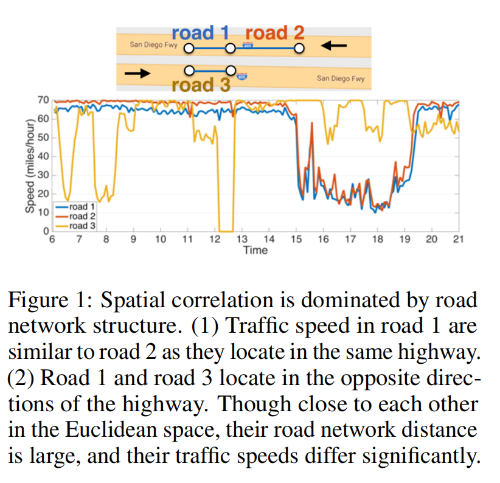
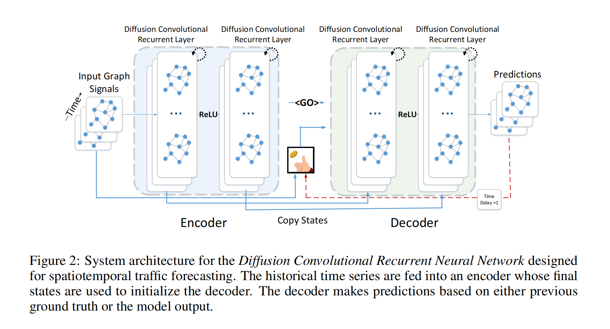

本文详细介绍了扩散卷积的相关知识以及论文DCRNN的研究内容和成果
介绍
- 基本目标是构建一个速度传感器网络，通过给定的历史速度数据以及潜在的道路网络，预测交通情况（速度）
- 挑战性主要在于时空关联性以及长程预测问题的内在复杂性
- 交通序列的动态变化性——不断出现的特殊事件例如交通事故和上下班高峰导致了不稳定性，使长期预测变得不可靠
- 道路网络上的交通传感器具备独特的空间关联性——非欧且有向

-
交通预测数十年的发展可以分为两个范畴：知识驱动和数据驱动
- 知识驱动的方法需要用到排队论并模拟交通中的用户行为
- 数据驱动的方法依赖静态假设，容易和实际的交通数据相违背
-
之前的数据驱动的方法有的没能建模空间联系、有的用CNN提取空间联系但是是在欧氏空间中建模，还有的在图上建模但是是在无向图上
-
本文用有向图的节点代表传感器，边的权重表示传感器之间的近似性（时空），将动态的交通流当成广播过程建模并且提出了广播卷积（diffusion convolution）操作来捕获空间依赖并提出了应用了广播卷积的广播卷积循环神经网络（DCRNN）。
方法论
交通预测问题
目标是预测根据给定的$N$个道路网络上相关的传感器返回的历史数据预测未来的交通速度，可以用图定义：$\mathcal{G}=(\mathcal{V},\epsilon,W)$，其中$|\mathcal{V} |=N$代表传感器节点，$\epsilon$代表边集，$W$代表边的邻接权重（由道路图距离方程计算得到）的矩阵。观测到的交通流数据可以用$X\in \mathbb{R}^{N\times P}$表示，其中$P$代表每个节点的特征数（例如速度、容量）。$X^{(t)}$达标在$t$时刻观测到的数据，该问题旨在学习一个映射$h(\cdot)$通过过去的$T’$个数据预测未来的$T$个数据：
$$[X^{(t-T’+1)},…,X^{(t)};\mathcal{G}]\stackrel{h(\cdot)}{\longrightarrow}[X^{(t+1)},…,X^{(t+T)}] $$
空间依赖建模
把交通流和扩散过程相结合，以抓住交通流动态数据随机性的本质。其中用到了图上的random walk和diffusion convolution，先介绍该知识：
本文中，扩散过程可以表示为——在图$\mathcal{G}$上进行random walk，重新开始概率$\alpha \in [0,1]$，状态转移矩阵$D^{-1}_0W$，其中$D^{-1} _0$是出度矩阵。在若干步后，这个马尔可夫过程收敛到一个稳定的状态$\mathcal{P} \in \mathbb{R} ^{N\times N}$，其第$i$行$\mathcal{P} _{i,:}\in \mathbb{R}^N$表示从节点$v_i \in \mathcal{V}$扩散而来的可能性，因此是和节点$v_i$的相关性：
$$\mathcal{P}=\sum_{k=0}^{\infty}{\alpha(1-\alpha)^k (D^{-1}_0 W)^k}$$
其中$k$代表做了$k$步扩散过程，由于采用的是有向图，实践过程中会考虑双向扩散，因此为模型提供更大的灵活性，并且能够捕获双向的交通情况。
扩散卷积则被表示为：
$$X _{:,p} \ast _{ \mathcal{G}} f _\theta=\sum _{k=0} ^{K-1}(\theta _{k,1}(D ^{-1} _0 W)^k+ \theta _{k,2}(D ^{-1} _0 W^T)^k) X _{:,p} \quad for\quad p \in [1,P]\cap N ^\ast$$
其中$f_\theta$为卷积核，$\pmb\theta \in \mathbb{R}^{K\times 2}$是卷积核的参数，$D^{-1}_0W$和$D^{-1}_IW^T$分别代表扩散过程和逆过程的转移矩阵
由上述可以定义扩散卷积层，一个将$P$维特征映射到$Q$维的层：
$$H_{:,q}=a(\sum_{p=1}^{P}X_{:,p}\ast_{\mathcal{G}}f_{\Theta_{q,p,:,:}})\quad for\quad q\in[1,Q]\cap N^\ast$$
其中$X\in \mathbb{R}^{N\times P}$是输入，$H\in \mathbb{R}^{N\times Q}$是输出，$\Theta \in \mathbb{R} ^{Q\times P \times K\times 2}=[\theta]_{q,p}$，其中$\Theta _{q,p,:,:}\in \mathbb{R} ^{K\times 2}$表示第$p$个输入和第$q$个输出的关联
时间动态建模
采用循环神经网络建模，使用门控循环单元（GRU），把线性层替换为扩散卷积，形成本文提出的扩散卷积门控单元（DCGRU）
$$r^{(t)}=\sigma(\Theta_r \ast _{\mathcal{G}}[X^{(t)},H^{(t-1)}]+b_r)$$
$$u(t)=\sigma(\Theta_u \ast_{\mathcal{G}}[X^{(t)},H^{t-1}]+b_u)$$
$$C^{(t)}=tanh(\Theta_C \ast_{\mathcal{G}} [X^{(t)},(r^{(t)}\odot H^{(t-1)}]+b_c)$$
$$H^{(t)}=u^{(t)}\odot H^{(t-1)}+(1-u^{(t)})\odot C^{(t)}$$
其中$X^{(t)}$和$H^{(t)}$分别代表$t$时刻的输入和输出，$r^{(t)}$和$u^{(t)}$分别代表$t$时刻的重置门和更新门，$\Theta_{r}$，$\Theta_{u}$和$\Theta_{C}$分别是相关卷积核的参数，和GRU一样，DCGRU也可以被用来构建卷积神经网络的层并且可以用反向传播算法进行训练
在多步预测过程中采用编码器-解码器的结构，且均为DCGRU。训练过程中，将历史时间序列数据投入编码器中，并且用最终状态初始化解码器。解码器通过和ground truth比对生成预测：

实验
在两个数据集METR-LA和PEMS-BAY上进行实验，实验中将交通读数数据分为5分钟一个窗口，采取Z-Score分割法，70%的数据用以训练，20%用以测试，10%用以验证。为了构建传感器图，采用阈值高斯核构建邻接矩阵$W_{ij}=exp(-\frac{dist(v_i,v_j)^2}{\sigma^2})$，当其小于一个阈值时，将其定为0。其中$W_{ij}$表示传感器$v_i$和$v_j$之间的权重，$dist(v_i,v_j)$表示道路网上两传感器的实际距离，$\sigma$表示距离的标准差
实验设置
将DCRNN和其他广泛应用的时间序列回归模型对比：
- HA
- ARIMA
- VAR
- SVR
- FNN
- FC-LSTM
交通预测表现对比
设定metrics:
- MAE
- MAPE
- RMSE
原文
如果您喜欢此博客或发现它对您有用，则欢迎对此发表评论。 也欢迎您共享此博客，以便更多人可以参与。 如果博客中使用的图像侵犯了您的版权，请与作者联系以将其删除。 谢谢 ！